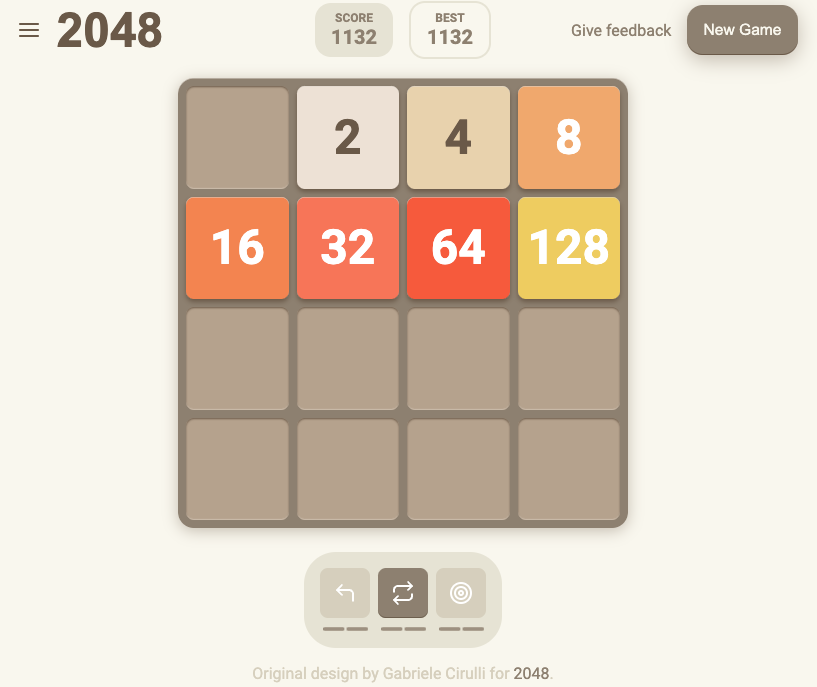

This project is a responsive design clone of the popular 2048 game, originally created by Gabriele Cirulli. The goal was to replicate the visual style. This project was a induvidual student assignment for Høyskolen Kristiania.

Process
With this project, I wanted to explore minimalist design principles while ensuring the game retained its iconic look. I studied the original 2048 interface and streamlined the layout for modern devices, keeping it engaging yet simple.
The implementation involved creating a responsive grid system using vanilla HTML and CSS, ensuring the game adapts seamlessly to both desktop and mobile screens.
Code
The focus of this project was purely frontend design, so no game logic was implemented. Key highlights include:
- - Responsive grid layout using CSS Grid and media queries.
- - Custom styling for tiles, typography, and animations, replicating the original game's aesthetic.
- - Scalable design, making it easy to integrate functionality in the future.
Design
The design is rooted in simplicity and focus, with a color palette and typography inspired by the original game. The grid system ensures the layout remains balanced, and responsive adjustments ensure it works smoothly across all devices.
Links
Published website: https://sbraende-2048-clone.netlify.app/
GitHub repository: https://github.com/sbraende/2048-Clone